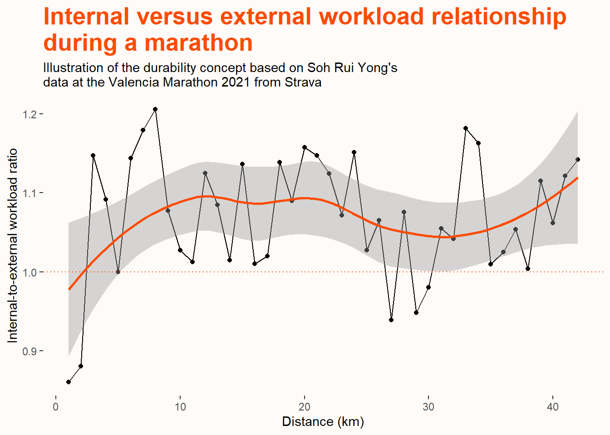
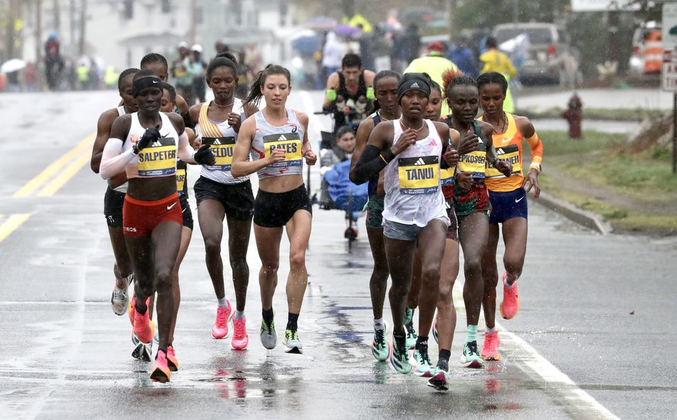

If you are watching an elite marathon race and new to the sport, you are unlikely to identify who are the better runners or potential winners during the initial stages. The early stages of an endurance race such as a marathon are often characterised by relatively large number of athletes running comfortably together, with little clues of differentiation among them. The contrast in performance between runners typically becomes more apparent as the race progresses, with the number of runners in the leading pack diminishing with time. For example, in the women’s race of this year’s Boston Marathon, the lead pack started with over 30 athletes, reducing to 11 at the halfway mark, and 5 athletes battled for the win at the 40km mark. Such phenomenon of attrition is often attributed to superior physiological traits like maximal oxygen consumption (VO2max), lactate threshold and running economy. Recent research suggests that differences in endurance performance may also be attributed to a new physiological trait termed durability.

Concept of Durability
The concept of durability in endurance sports performance was first introduced two years ago in the Sports Medicine journal. Interestingly, the definition of the concept is quite close to its meaning in lay language, which represents the ability to last over time. In the journal article, it was technically defined as “the time of onset and magnitude of deterioration in physiological-profiling characteristics over time during prolonged exercise”(Maunder et al. 2021). Performance-wise, this simply refers to the degree of resilience to fatigue in an athlete. In the context of prolonged exercise performance, a more “durable” athlete would be able to last longer at a certain intensity as compared to a less “durable” athlete.
In the world of endurance sports, it has long been recognized that VO2max, lactate threshold and efficiency are the key determinants of performance (Joyner and Coyle 2008). Indeed, the identification of runners who have the physiological potential to run a 2-hour marathon in the Nike’s “Breaking 2” project had been primarily based on these parameters (Jones et al. 2021). Unsurprisingly, these measures serve as indices of fitness and markers of exercise intensity levels. For example, the use of critical power/speed or maximal lactate steady state are often used to segregate between the “heavy” and “severe” intensity domains. Thus, these measures collectively help in building the physiological profiles of athletes with implications for performance regulation and training prescription.
While these physiological variables are clearly imperative, it was critiqued that these measures do not account for its changes over time thus undermining its usefulness in exercise regulation after prolonged periods. Theoretically, intensity levels below the “severe” intensity domain are purported to achieve steady state, which means that physiological variables would stabilize and thus efforts are relatively sustainable. However, contrary to what the term suggests, it was argued that there is no true steady state during prolonged exercise. Regardless of how low the exercise intensity is, there would be changes to one’s physiology and the athlete would experience fatigue eventually. For example, if you are on a low intensity long run for several hours at a constant speed of 10 kilometres per hour, you would expectedly feel harder at the last hour as compared to the first hour. This difference in subjective fatigue is likely a manifestation of underlying changes in your physiology with time. Empirical evidence has demonstrated that one’s critical power is reduced after 2 hours of heavy-intensity work (CLARK et al. 2018a), which suggests that there are differences in physiological profiles between fatigued and rested state. Hence, the traditional key physiological measures that are often established in a fresh state may be limited to explain performance in very prolonged exercise. Indeed, this point was highlighted by one of the authors, Dr Stephen Seiler, on That Triathlon Show podcast in which he argued that an athlete’s fresh physiological state “is not a number that is relevant four hours into a race”.
Durability is posited to fill this limitation gap by quantifying the difference between physiological profiles during fresh and fatigued states. Athletes with similar physiological profiles under rested conditions may have very different profiles under fatigue, suggesting contrasts in resilience to deterioration. Thus, the concept of durability presents itself as a promising measure to add to the physiological toolbox and could potentially better help to explain inter-individual differences in performance. This is supported by a study on professional cyclists, which showed that more successful cyclists tend to have a smaller decline in their power output after high amount of work done as compared to their less successful counterparts (VAN ERP, SANDERS, and LAMBERTS 2021).
Measurement of Durability
While the idea of durability seems theoretically attractive, much research work remains to be conducted on how best to measure it. Based on the definition of durability above, it can be simply quantified as the change in physiological profile over time. Recent research has focused on the power-duration relationship and demonstrated observations of deterioration in critical power between fresh and fatigued states in laboratory settings (CLARK et al. 2018b; SPRAGG, LEO, and SWART 2022). The article on durability also proposed an interesting approach to quantify durability in field data by measuring the extent of uncoupling between heart rate responses and power/pace output. Such uncoupling is a common phenomenon in prolonged exercise termed cardiovascular drift, in which cardiovascular responses tend to drift upwards in the absence of change in workload. The authors proposed that the deviation from the linear relationship between internal and external workload could be an indicator of the change in physiological profile during prolonged exercise.
Above is an example that I created of a visualisation illustrating the change in the ratio between internal and external workload during an endurance race. It is based on public Strava data from Singapore’s national runner, Soh Rui Yong in the Valencia Marathon race in 2021. Following similar computation approach from the article, internal workload is defined as percentage of heart rate reserve, and external workload is defined as percentage of 6-minute maximal pace. Estimations of these parameters were made due to missing information, in which heart rate reserve is assumed to be 160 beats (resting heart rate of 40 and maximum heart rate of 200) and 6-minute maximal pace is based on his average pace in his best 2.4km performance (i.e., 21.07 km/h). A ratio of 1 means change in heart rate responses is proportional to the change in workload. Values greater than 1 indicate that there is a disproportionate increase in internal load as compared to the external load, implying a deterioration in physiological profile.
First, the fluctuations in the workload ratio values indicate that the heart rate responses captured are pretty noisy thus may not be the best data. Despite that, the visualization showcases the drift in heart rate responses during endurance exercise with majority of the workload ratio values above 1. This is explained by the greater variation in heart rate responses (5.8%) as compared to pace (2.1%). Nevertheless, the lack of linear relationship between time and workload ratio as evidenced in the visualization suggests that the athlete has reasonably good durability, which probably helps to partially explain the consistence in pace throughout the race. Given that this area of research is still relatively in its infancy, there remains a lack of benchmarks to interpret these changes in physiological profile during prolonged exercise.
Practical Implications
The recognition of physiological profiles being dynamic instead of static brings several practical implications in terms of exercise testing, training prescription and performance regulation.
Exercise Testing
Presently, exercise testing be it on the field or laboratories is typically conducted when athletes are fresh and well-rested. As mentioned above, the physiological capacity determined under such conditions lose some of its relevance in prolonged endurance events due to changes over time. Thus, quantifying an athlete’s durability by performing exercise testing under fatigued conditions would better inform the physiological profiles of endurance athletes. In addition, athletes may also estimate and monitor their durability from their training or performance data using the approach above.
Exercise Prescription
Given that better durability potentially translates into better performance, it could act as a key training adaptation to be targeted in endurance athletes. This could occur in the absence of change in the traditional three physiological variables. Hence, components of training programmes should be planned with the specific aim of improving physiological resilience. While there is a lack of empirical evidence on how to do so currently, the principle of specificity probably hypothesises that longer durations of training session are likely beneficial to improve durability.
Performance Regulation
Pacing of efforts is critical in endurance sports, and knowledge of one’s durability such as magnitude of decline or time of decline helps to better plan pacing strategies and manage performance. Importantly, recognising the drift in heart rate responses during prolonged exercise highlights the limitation of solely pacing by heart rate. It has been argued that some of this cardiovascular drift may be ‘harmless’ and some may be deleterious, and endurance athletes should be wary of the latter.
Conclusion
Ultimately, superior physiology wins the race in endurance sports and the concept of durability supports this notion by highlighting the importance of resilience to deterioration of physiological traits during prolonged exercise. This could be the trait that differentiates performance among endurance athletes. Indeed, well-known exercise physiologist, Dr Andrew Jones recently proposed that such physiological resilience to be considered the fourth key physiological variable of endurance exercise physiology alongside VO2max, lactate threshold and efficiency (Jones 2023). I am excited to see more applications of this concept in the realm of endurance sports in the near future!
References
CLARK, IDA E., ANNI VANHATALO, STEPHEN J. BAILEY, LEE J. WYLIE, BRETT S. KIRBY, BRAD W. WILKINS, and ANDREW M. JONES. 2018a. “Effects of Two Hours of Heavy-Intensity Exercise on the PowerDuration Relationship.” Medicine & Science in Sports & Exercise 50 (8): 1658–68. https://doi.org/10.1249/mss.0000000000001601.
———. 2018b. “Effects of Two Hours of Heavy-Intensity Exercise on the PowerDuration Relationship.” Medicine & Science in Sports & Exercise 50 (8): 1658–68. https://doi.org/10.1249/mss.0000000000001601.
Jones, Andrew M. 2023. “The Fourth Dimension: Physiological Resilience as an Independent Determinant of Endurance Exercise Performance.” The Journal of Physiology, August. https://doi.org/10.1113/jp284205.
Jones, Andrew M., Brett S. Kirby, Ida E. Clark, Hannah M. Rice, Elizabeth Fulkerson, Lee J. Wylie, Daryl P. Wilkerson, Anni Vanhatalo, and Brad W. Wilkins. 2021. “Physiological Demands of Running at 2-Hour Marathon Race Pace.” Journal of Applied Physiology 130 (2): 369–79. https://doi.org/10.1152/japplphysiol.00647.2020.
Joyner, Michael J., and Edward F. Coyle. 2008. “Endurance Exercise Performance: The Physiology of Champions.” The Journal of Physiology 586 (1): 35–44. https://doi.org/10.1113/jphysiol.2007.143834.
Maunder, Ed, Stephen Seiler, Mathew J. Mildenhall, Andrew E. Kilding, and Daniel J. Plews. 2021. “The Importance of ‘Durability’ in the Physiological Profiling of Endurance Athletes.” Sports Medicine 51 (8): 1619–28. https://doi.org/10.1007/s40279-021-01459-0.
SPRAGG, JAMES, PETER LEO, and JEROEN SWART. 2022. “The Relationship Between Physiological Characteristics and Durability in Male Professional Cyclists.” Medicine & Science in Sports & Exercise 55 (1): 133–40. https://doi.org/10.1249/mss.0000000000003024.
VAN ERP, TEUN, DAJO SANDERS, and ROBERT P. LAMBERTS. 2021. “Maintaining Power Output with Accumulating Levels of Work Done Is a Key Determinant for Success in Professional Cycling.” Medicine & Science in Sports & Exercise 53 (9): 1903–10. https://doi.org/10.1249/mss.0000000000002656.